Existen varios niveles de control:
Las tablas de control se almacenan en un fichero y mediante la aplicación cube-físico[44] se cargan y envían al gusano. También es posible posicionar los servos desde este programa, usando unas barras de desplazamiento, lo que permie realizar pruebas mecánicas y generar tablas de control (secuencias de movimiento) manualmente, guardándolas en un fichero.
![[*]](crossref.png) ).
Esta tabla se almacena en un fichero y puede ser reproducida por el
programa cube-fisico. Sólo se generan secuencias para un gusano
de 4 articulaciones.
).
Esta tabla se almacena en un fichero y puede ser reproducida por el
programa cube-fisico. Sólo se generan secuencias para un gusano
de 4 articulaciones.
|
 |